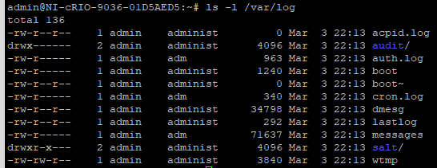

Logs on NI Linux Real-Time Systems¶
Introduction¶
This document is an introduction to some of the common logs on Linux Real-Time Systems.
Useful NI Linux Real-Time Logs¶
Logs in /var/log/¶
The Linux Operating System and many Linux utilities will write to /var/log/ by default.
For example, the general messages log (or syslog depending on the system) is typically found here.
NI Linux Real-Time Systems are designed as embedded, headless systems that need to be able to recover should issues occur.
As such, the /var/log/ directory is a symbolic link to /var/volatile/log/.
The /var/volatile/log/ directory is mapped to RAM instead of the persistent device storage.
This prevents the system’s device storage from filling with logs and causing other issues on devices with extremely limited storage but results in the logs not persisting through a reboot.
To make these logs persist through a reboot, see the Enabling Persistent Logs section of this document.
Note
The kern.log file is traditionally stored here, but on NI Linux Real-Time systems is instead located at /var/local/natinst/log/ to ensure it persists between reboots.
Log Name |
File Path |
Description |
|---|---|---|
acpid.log |
/var/log/acpid.log |
Logs any Advanced Configuration and Power Management Interface (ACPI) events, such as reboot through the power button on certain cRIO-903x. |
auth.log |
/var/log/auth.log |
System authorization information. User logins and corresponding authentication mechanism. |
boot |
/var/log/boot |
Console log of the boot process. |
cron.log |
/var/log/cron.log |
Log of cron job related messages, such as when a cron job is run. Many Linux scripts rely on cron to run periodically. |
dmesg |
/var/log/dmesg |
Device driver message log. Can be printed to console via dmesg command. |
lastlog |
/var/log/lastlog |
Stores information about previous log in times in a binary format. Can only be read using lastlog command. |
messages |
/var/log/messages |
General messages and info. Basically, catchall for all other logging processes on the system. Note: Some Linux systems use syslog instead of messages. These are oftentimes interchangeable. |
minion |
/var/log/salt/minion |
The NI-Salt Minion log. Used to log information about the salt-minion service. |
wtmp |
/var/log/wtmp |
Stores information about log ins, log outs, and shutdowns accessible via the last command. |
Logs in /var/local/natinst/log/¶
Most NI Software will log to the /var/local/natinst/log/ directory.
The following logs will exist by default with LabVIEW Real-Time installed.
Note that some of these logs (such as kern.log) are not created until something logs to them.
Some of these logs can be seen in NI MAX using the View Error Log context menu option.
Log Name |
Run Mode File Path |
Safe Mode File Path |
Description |
|---|---|---|---|
errlog.txt |
/var/local/natinst/log |
/mnt/userfs/var/local/natinst/log |
LabVIEW Real-Time (lvrt) process log, including any messages written to System Log from LabVIEW applications. |
LabVIEW logs |
/var/local/natinst/log |
/mnt/userfs/var/local/natinst/log |
Logs of what went wrong with LabVIEW Real-Time. There are both lvlog*.txt files and lvrt*log.txt files. A new lvlog should be created any time the lvrt process restarts with a new process ID. |
SystemWebServer.log |
/var/local/natinst/log |
/mnt/userfs/var/local/natinst/log |
Log anything of interest that happened with the SystemWebServer. |
kern.log |
/var/local/natinst/log |
/mnt/userfs/var/local/natinst/log |
What went wrong at the kernel level (Linux kernel log levels KERN_ERR to KERN_EMERG) |
LabVIEW Core Dump |
/var/local/natinst/log |
/mnt/userfs/var/local/natinst/log |
If the LabVIEW process crashes with core dumps enabled, a disk file containing an image of the process’s memory at termination (Core dump) will be stored on the target. |
Logrotate¶
To prevent logs from growing too large, NI Linux Real-Time includes the logrotate utility with some default configurations.
This utility is run as a cron job on NI Linux Real-Time systems.
For more information on the cron utility and logrotate utility, refer to the third-party documentation available online for these common Linux utilities.
The following describes the default configuration of logrotate on a NI Linux Real-Time System.
The
logrotateutility is run every 5 minutes ascronjob by default. This configuration is stored in/etc/cron.d/logrotateusing thecrontabfile format.The main
logrotateconfiguration file (which defines defaults and settings for some logs) is stored at/etc/logrotate.conf. Configuration files for individual logs can be found in the/etc/logrotate.d/directory.For information on the format of
logrotateconfiguration files, refer to the publicly available manuals for the utility.
Per the default
logrotate.conffile, logs are rotated daily with up to 4 copies archived. Older archives are deleted when a log is rotated if the maximum is hit. This configuration is overwritten by the configurations for individual files.For example, a configuration file might instead specify that the log is rotated hourly instead of the default setting.
When modifying these settings, keep in mind that many of the logs are stored in /var/log and are therefore stored in volatile memory by default. If the modified settings result in logs growing too large, it can result in the system running out of memory. Even for logs stored in the device’s physical storage, it’s important to ensure that the logs don’t accidentally file up the device storage completely. Use reasonable settings and consider rotating logs that grow quickly at specific file sizes whenever using non-default settings.
Logging to the System Log(s)¶
When logging status or event information, it may be desirable to write to one of the logs outlined above. The following list outlines some of the common logs and what methods are recommended for writing to them.
/var/local/natinst/log/errlog.txtWrite to System Log VI - On Linux Real-Time Systems, this will write to the
errlog.txtfile.-
On Linux Real-Time Systems, when the Interface is set to Write to system log, the input string will be written to the errlog.txt file.
/var/log/messages-
Using the command
logger <string>with the System Exec VI will write that string to themessageslog.
-
Note that when writing to these logs that it’s important to be aware of how they behave.
For example, by default the errlog.txt file will persist across reboots but be rotated by logrotate very quickly due to file size while the messages log will not persist across reboots but will be rotated less often.
Persistent Logs¶
Persistent logs setting controls whether contents of /var/log persist across device reboots or not.
NILRT >= 11.2¶
On NILRT releases >= 11.2, persistent logs are enabled by default. i.e., the contents of /var/log persist across device reboots.
To disable persistent logs (i.e., use volatile logs), run nirtcfg --set section=SystemSettings,token=PersistentLogs.enabled,value="False" on command-line and reboot the NI Linux Real-Time system.
NILRT <= 11.1¶
On older NILRT releases (NILRT <= 11.1), /var/log is a symlink to /var/volatile/log.
The /var/volatile location is a RAM-based tmpfs filesystem whose contents are lost on each reboot.
This section explains how to make /var/log contents persistent.
Note
These settings will only persist until a format or software upgrade is made. Once that happens, the Linux Real-Time settings may revert to their defaults for that version.
To modify these settings for the /var/log location:
Note
To find the version of NILRT installed on the target, run cat /etc/os-release at the command-line.
NILRT >= 9.1¶
At the command-line on the target, run
nirtcfg --set section=SystemSettings,token=PersistentLogs.enabled,value="True".NILRT 9.1 only: An additional step is required on NI Linux Real-Time 9.1. This step is not required on NI Linux Real-Time 9.2 and later. At the command-line on the target, run
/etc/init.d/ni-configpersistentlogsReboot the NI Linux Real-Time system.
To revert to using volatile logs, follow the same steps using value="False" in the nirtcfg command.
NILRT < 9.1¶
Modify
/etc/default/volatiles/00_coreas follows via either a console, sFTP, or your preferred method for editing configuration files on Linux Real-Time systems.Find the entry in
00_corefor/var/log. It should be similar to the following:l root root 0755 /var/log /var/volatile/logModify the entry by removing the line or commenting it out.
Save or otherwise apply the changed file to the system.
Once volatiles on the system have been created the first time, the configuration is cached via the
/etc/volatile.cachefile. To force regeneration of these volatiles via the new settings, delete that file.rm /etc/volatile.cacheThe existing symbolic link must also be removed. This can be done by deleting
/var/log.rm /var/logNote
Do not add a trailing slash when removing the symlink. Doing so will not behave as intended.
Create a new
/var/logdirectory so that the location is present upon reboot.mkdir /var/logReboot the NI Linux Real-Time system.
Once the system has rebooted, you can check that the change has applied.
Instead of the symbolic link information, you should instead see the files located in /var/log.
Note that the image below may differ from your system depending on the software installed.
